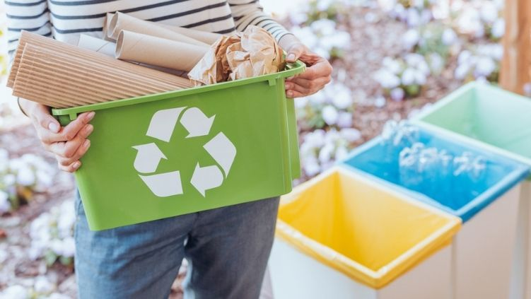
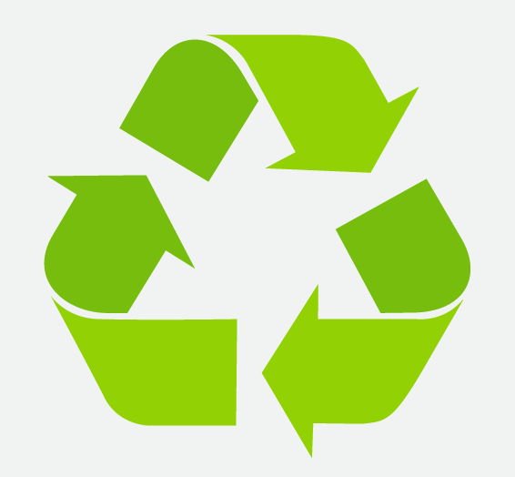

¿Qué son las tres R?
En ecología y protección ambiental, se conoce como la Regla de las 3R o Regla de las tres erres a una propuesta de modificación de nuestros hábitos de consumo como sociedad. Fue popularizada por la agrupación ecologista Greenpeace.
Plantea que el consumo responsable, es decir, la aplicación de ciertas estrategias en el manejo de nuestros desechos y residuos materiales pueden significar un cambio ecológico positivo, que tenga impacto en la calidad medioambiental del planeta.
Para ello, Greenpeace propone la regla nemotécnica de las “3R”: Reducir, Reutilizar y Reciclar, tres formas de controlar la cantidad de desechos sólidos que arrojamos al medio ambiente y que tiene un impacto nocivo sobre la biodiversidad.
Reducir
La primera R de la ecología tiene que ver con la minimización de los residuos producidos a diario en nuestras sociedades, mediante una forma de consumo menos voraz, menos vertiginosa y más responsable. Esta propuesta contradice el espíritu del marketing y el consumismo capitalista.
Reducir significa consumir de manera responsable y consciente, disminuyendo así la cantidad utilizada de:
- Energía innecesaria. Evitando dejar luces encendidas, apagando aparatos que no estén en uso, y empleando los electrodomésticos (lavadoras, lavavajillas, secadoras) en su justa medida.
- Material de un único uso. Como material de embalaje, bolsas plásticas, cubiertos, vasos y platos plásticos, etc.
- Gases contaminantes. Empleando los automóviles de modo responsable, utilizando el transporte público, haciendo car pool, etc.
Reutilizar
La segunda R de la ecología plantea que los materiales empleados deben tener la vida útil más larga posible, en lugar de ser utilizados una vez y desechados para volver a comprar uno nuevo.
Así, reutilizando los materiales lo más posible, se posterga la necesidad de consumir uno nuevo y de producir desecho medioambiental. Esto pasa por repararlos, darles un uso nuevo y creativo, o postergar lo más posible la compra de uno nuevo.
Cosas que puedes hacer para reutilizar:
- Reutilizar envases de vidrio y plástico.
- Reciclar ropa y textiles.
- Crear compost con restos orgánicos.
- Reutilizar cartón y papel.
- Reutilizar muebles y objetos grandes.
- Reutilizar bolsas de plástico.
Reciclar

La tercera R de la ecología es, quizá, la que mayores esfuerzos requiere, ya que consiste en el reciclaje de los materiales de desecho que sean aún aprovechables, para reinsertarlos en la cadena productiva como materia prima.
Este proceso es particularmente importante para los materiales reciclables no biodegradables, como ciertos plásticos, el cartón, el vidrio, el metal y el papel, por ejemplo, que pueden servir de insumo para la fabricación de nuevos elementos comercializables.
Por ejemplo, el vidrio puede refundirse y servir para hacer nuevas botellas; el papel y el cartón pueden descomponerse en pulpa y hacer con ellos papel de reciclaje; el aluminio y el cobre pueden fundirse y emplearse de nuevo, etc.
Beneficios de las Tres R
Por un lado, los beneficios de implantar las tres erres de la ecología impactan en el medio ambiente y la reducción de la huella ecológica de nuestra civilización, cosa que de por sí es lo bastante urgente y prioritaria.
Por otro lado, aportan beneficios de tipo económico como la reducción de los gastos superfluos, el ahorro familiar, el aprovechamiento de materiales reciclables como materia prima en lugar de extraer más de la naturaleza, etc.
Un modelo de desarrollo sustentable, que pueda perdurar en el tiempo sin incurrir en crisis y catástrofes en un futuro previsible, ha de necesariamente implementar este concepto de consumo responsable.
Importancia de las Tres R
La importancia de la defensa del medio ambiente mediante las tres erres es vital, especialmente en el mundo posindustrial y orientado al consumo en que vivimos hoy, donde queremos tener todo rápido a la mano y queremos olvidarnos de inmediato de los residuos una vez comida la hamburguesa.
La toma de conciencia del daño ecológico bestial que ocasionamos al planeta es la única vía hacia la supervivencia de nuestra propia especie. La cantidad de basura no biodegradable es tal, que empezamos ya a percibirla incluso en lo que comemos.
Por ejemplo, los microplásticos son partículas de plásticos desechados al mar (bolsas de basura, sobre todo) cuyo tamaño es imperceptible pero su presencia notoria, por lo que se alojan en el interior de peces y otros animales de los que nos alimentamos. Las tres erres de la ecología son una forma de iniciar el cambio antes de que el medio ambiente sea totalmente contaminado.